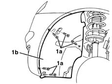
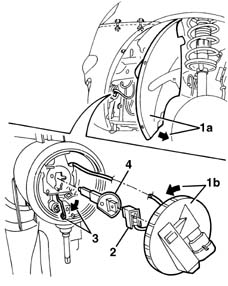
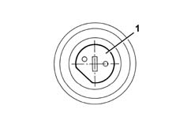

5540D14 l/h or r/h fog lamp bulb (one) - r+r
- Path
- Procedures > 55 ELECTRICAL EQUIPMENT > 5540 EXTERIOR LIGHTING > 5540D fog lamps > 5540D14 l/h or r/h fog lamp bulb (one) - r+r
- Kind
- repair procedure (removal / refitting; the operation number is the code)
- Applies to
- all engines; all production periods
- Interactive page
- https://sloeber94.github.io/elrnDB-lYpsln/en/#/2429419
Applies to: all engines; all production periods
 Removing
Removing
 Refitting
RefittingPlace the vehicle on a lift.
1. Undo the bolts (1a) securing front wheel arch (1b).

Applies to: all engines; all production periods
1. Move wheelarch (1a) slightly and turn foglamp cover(1b) in an anti-clockwise direction, then remove.
2. Disconnect the electrical connection from the lamp.
3. Release the retaining spring moving it sideways.
4. Extract the bulb.

Applies to: all engines; all production periods
Refitting
RemovingCheck the efficiency and the cleanliness of the bulb.
1. Insert the bulb in its housing, positioning it as illustrated in the diagram.

Applies to: all engines; all production periods
Fit the retaining clip in its seat.
Connect the electrical connection to the lamp.
Position the cover and rotate it in place.
Place the front wheelarch in position and secure it using the bolts.
Remove the vehicle from the lift.
Test the electrical operation of the fog lamp.